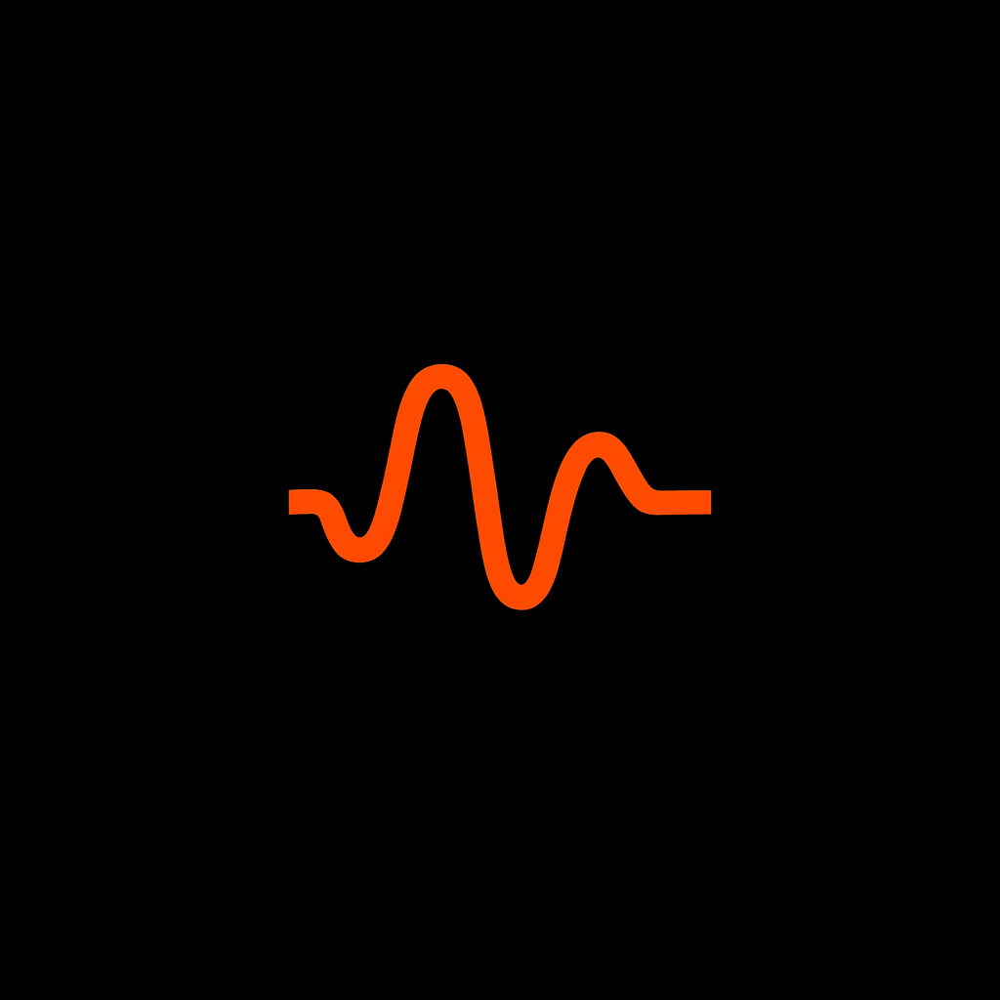

CRI-CORE is the deterministic admissibility kernel. It receives a canonical proposal and a compiled authority contract, evaluates the fixed stage pipeline, and returns an execution decision before any action is allowed to run.
{
"commit_allowed": false,
"reason": "required approval missing",
"contract_hash": "sha256:...",
"stage": "approval_requirements"
}Reject proposals that do not match the canonical boundary structure.
Verify the proposal references the exact contract used for evaluation.
Validate required evidence and immutable references supplied by upstream systems.
Evaluate roles, approvals, separation requirements, and contract constraints.
Return the deterministic admissibility result: allowed or blocked.
Identical proposal and contract inputs produce the same admissibility result.
The kernel evaluates explicit contract and proposal data. It does not infer policy meaning.
Contract hash mismatch blocks execution instead of silently accepting drift.
The result is suitable for Waveframe Guard to enforce before production execution.
pip install cricore
PyPI: cricore
GitHub: Waveframe-Labs/CRI-CORE
CRI-CORE decides admissibility. It does not execute actions.
Governance-Ledger and the Contract Compiler define authority upstream. Proposal Normalizer supplies the canonical input shape. CRI-CORE evaluates. Waveframe Guard enforces the result.